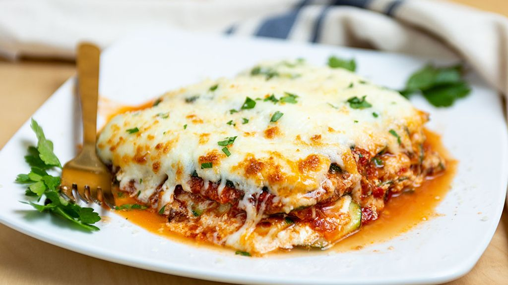

Homeade Lasagna

Description:
Everyone loves a good lasagna, right? It's a great way to feed a crowd and a perfect dish to bring to a potluck. It freezes well. It reheats well. Leftovers will keep you happy for days.
Ingredients:
- 2 teaspoons extra virgin olive oil
- 1 pound of ground beef
- 2 cloves garlic, minced
- 1 can of tomato sauce
- 1 tablespoon Italian seasoning
- 2 tablespoons chopped fresh oregano
- 1 pinch of garlic powder
- 1 tablespoon red or white wine vinegar
- 1/4 cup fresh parsley
- 1/2 pound dry lasagna noodles
- 15 onces ricotta cheese
- 4 ounces of parmesan cheese
- 24 ounces of mozzarella cheese
Steps
- Put pasta water on boil (1 tbsp salt for every 2 quarts of water)
- Brown the ground beef using 2 teapsoons of olive oil
- Cook the bell pepper, onions, garlic, add back the beef. Cook for 4 to 5 minutes. Add the minced garlic and cook half a minute more
- Transfer to medium sized pot, add tomatoes and remaining sauce ingredients to build the sauce
- Boil and drain lasagna noodles
- In a 9x13-inch casserole or lasagna dish, ladle a cup of sauce and spread it over the bottom of the dish
- Sprinkle a layer of grated mozzarella on top of lasagna sauce
- Apply second layer of noodles. Top with remaining sauce
- Finish with another layer of noodles. Spread the reamining sauce over the top layer of noodles
- Bake at 375 degrees fahrenheit
- Serve!